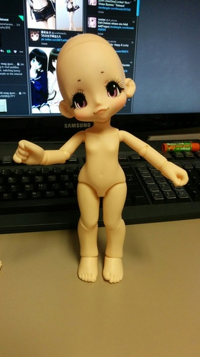

the day kikipops were announced was an amazing day! i couldnt believe kinokojuice was going to release kiki to the world for an extremely reasonable price! god bless!!!
i wasnt able to get the first kikipop, but my mom agreed to buy kikipop 2nd for me for my birthday and christmas present
the horror of seeing customs opened your doll for you first
one of her hands has a defect where theres a yellow smudge on her knuckle. hobby search could only offer me $10 of points for it, but i really just wanted a replacement hand! i had no intention of buying from them later anyway...
i think i'll try to skip kikipops from now on because her hands have horrible troubles staying on. her neck joint is a bit loose, but shes a solid stander. I make no promises on skipping kikipops though because azone makes some incredibly cute sets! i really would like a resin kiki though!